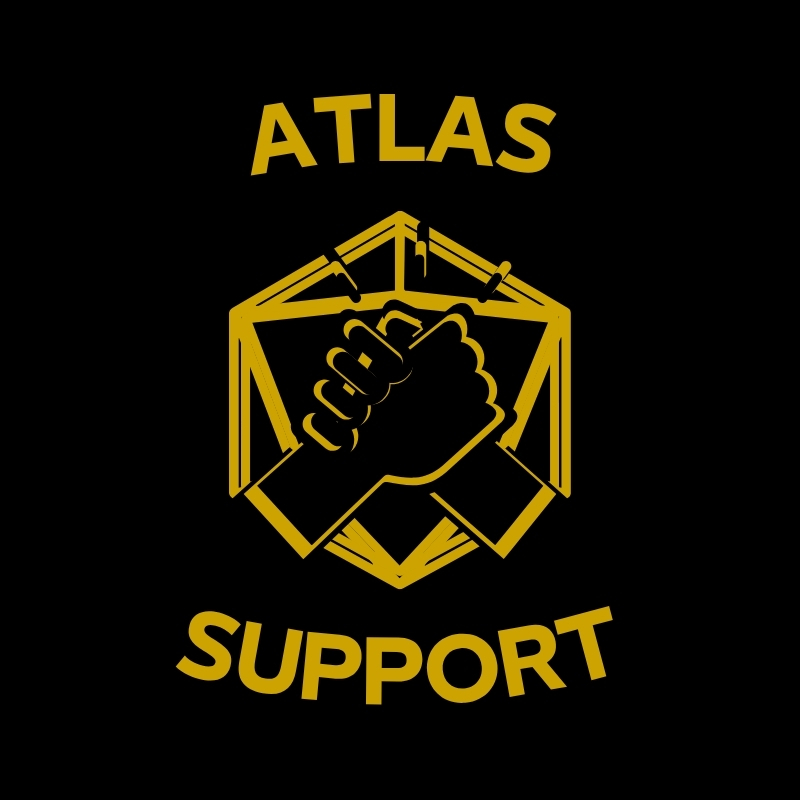

Division 05
Strategic Logistics & Global Operational Coordination
About the Division
The Atlas Support Command is Kairon's strategic logistics and global coordination division — the invisible force that makes every field operation possible. While other divisions deploy to the front, Atlas ensures that personnel, equipment, communications, and resources arrive exactly where they need to be, exactly when they are needed.
Established in 2015 following a review of Kairon's expanding operational footprint, Atlas was created to meet the logistical complexity of simultaneous multi-continent deployments. The division manages a global network of pre-positioned equipment caches, secure transport routes, and trusted logistics partners across every region of operation.
Atlas is not a support function — it is a strategic capability. In high-tempo or high-risk environments, logistical failure is operational failure. Atlas eliminates that risk.

Atlas Support Command — Division 05Mission
Atlas operates on a single principle: operational readiness cannot be improvised. Every contingency is planned, every supply chain is validated, and every deployment is resourced before the first operative steps onto the ground.
Capabilities
End-to-end management of equipment, personnel, and supply chains for all Kairon operational deployments globally. From pre-positioning to last-mile delivery in contested environments.
Management of ground, air, and maritime transport routes for the movement of personnel, classified equipment, and sensitive assets through complex international corridors.
Real-time coordination between all active Kairon divisions, maintaining situational awareness of all deployed assets and ensuring seamless interoperability across simultaneous engagements.
Deployment and maintenance of secure field communications networks, satellite links, and encrypted relay infrastructure for operations in low-signal environments.
Lifecycle management of Kairon's global equipment inventory, including specialist tactical hardware, surveillance systems, and protective equipment across all division stores.
Rapid resupply capability for active operations facing unexpected resource constraints, including emergency extraction of equipment and personnel from hostile environments.
Equipment & Assets
A managed fleet of armoured vehicles, light transport aircraft, and maritime vessels, pre-positioned across strategic hubs in Europe, the Middle East, and Asia-Pacific.
Deployable SATCOM terminals, encrypted HF/VHF radio infrastructure, and redundant communication relay systems certified to classified security standards.
Secure equipment caches maintained at 12 strategic locations worldwide, enabling same-day provision of specialist equipment to any active deployment within range.
Forward-deployed medical supply chains, trauma kit inventory management, and coordination with vetted medical facilities across all operational regions.
Engage Atlas
Atlas Support Command underpins every Kairon engagement. For enquiries regarding large-scale operational logistics, multi-continent deployments, or strategic resupply requirements, contact Kairon through our standard channels.